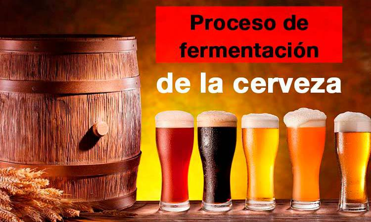

Aunque a los cerveceros experimentados les pueda parecer algo
evidente, servir correctamente una cerveza es algo que muchos
desconocen, y es que servir mal una cerveza puede arruinarla
completamente. No solo va a hacer que no la disfrutes como es
debido, sino que además puede sentarte mal. En este artículo
vamos a ver cómo se…
7 comentarios
Articulos sobre cervezas
¿Qué es la escala EBC en la cerveza? Te contamos cómo se mide el color de la cerveza
Existen diversas escalas para medir el color de las maltas o de la cerveza terminada. Probablemente la escala European Brewing Convention (EBC), sea la más conocida y usada en todo el mundo. Pero también existen otras escalas usadas, como la Standard Reference Method (SRM) y la Grados Lovibond, las cuales son prácticamente idénticas mientras que…
15 comentarios
Articulos sobre cervezas

Cómo fermentar cerveza. Explicación del proceso de fermentación de la cerveza
La fermentación de la cerveza, es un proceso por el cual los azúcares fermentables (que hay en el mosto de cerveza) se convierten en alcohol, esto lo produce la levadura liberando en este proceso, CO2 en forma de gas además de otros subproductos. Fermentar cerveza es relativamente sencillo, y es un proceso que se lleva…

7 comentarios